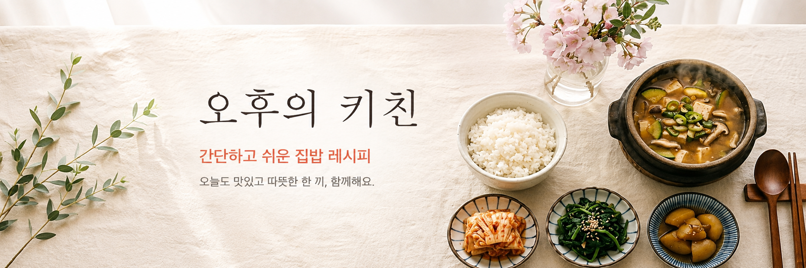
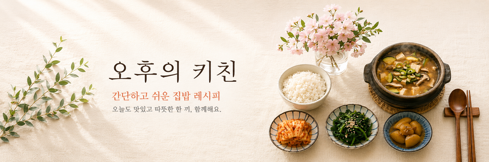

01
01
Kimbap
KIMBAPPerfekte Reiswürzung und feste Rolltechnik ohne Reißen.
Zum Rezept →Kimbap · Bento · Costco-Tipps · Tägliche Hausmannskost
Korean Everyday Food & Lifestyle Magazine
01
Perfekte Reiswürzung und feste Rolltechnik ohne Reißen.
Zum Rezept → 02
02
Am Vorabend vorbereitet für ein schnelles Frühstücks-Lunchbox.
Bento Ansehen → 03
03
Großpackungen Rindfleisch und Lachs clever portionieren.
Einkaufstipps →
04Herzhafte, bekömmliche koreanische Alltagsgerichte.
Rezepte Ansehen → 05
05
Schnelle 10-Minuten-Beilagen für den Kühlschrankvorrat.
Beilagen Ansehen →
06Reichhaltige Brühen und koreanische Eintöpfe ohne Glutamat.
Suppen Ansehen →
Fein abgestimmtes Sesamöl, trocken angebratenes Gemüse und professionelles Schneiden ohne Ausfransen.
5 saubere Beilagen ohne Auslaufen für die ganze Woche
1 Stunde 20 Minuten sanft geköchelt für feine Gelatine-Textur
Bleibt im Kühlschrank wunderbar weich ohne Mayonnaise
Sparen Sie morgens wertvolle Zeit.
Gewaschenes Kimchi harmoniert mit cremigem Thunfisch.
Ein beliebter koreanischer Klassiker für jeden Tag.
Durch vorheriges Salzen bleibt das Gemüse herrlich fest.